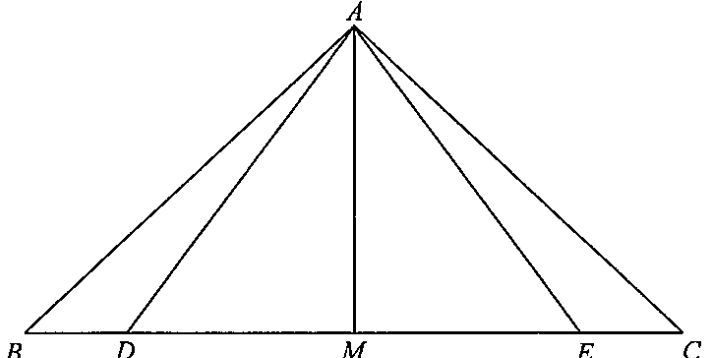

In Figure 1, \(ABC\) is a triangle. \(D\), \(E\) and \(M\) are points lying on \(BC\)
such that \(BD = CE\), \(\angle ADC = \angle AEB\) and \(DM = EM\).
(a) Prove that \(\Delta ACD \cong \Delta ABE\). [2 marks] (b) Suppose that \(AD = 15\text{ cm}\), \(BD = 7\text{ cm}\) and \(DE = 18\text{ cm}\). (i) Find \(AM\). (ii) Is \(\Delta ABE\) a right-angled triangle? Explain your answer. [5 marks]

Figure (original exam diagram)
Step-by-step Solution
STEP 1 · Part (a): Set up the two triangles
Consider \(\Delta ACD\) and \(\Delta ABE\). We are given:
\(\angle ADC = \angle AEB\) (given)
\(BD = CE\) (given)
The goal is to show \(\Delta ACD \cong \Delta ABE\).
STEP 2 · Equal sides & the SAS argument
SAS Congruence Condition\(AB=DE,\ \angle B=\angle E,\ BC=EF\ \Longrightarrow\ \triangle ABC\cong\triangle DEF\)In \\(\triangle ACD\\) and \\(\triangle ABE\\) we have \\(CD=BE\\), the given equal angles, and the equal sides \\(AD=AE\\).
Since \(BD = CE\), add \(DE\) to both sides:
$$CE + DE = BD + DE \;\Longrightarrow\; CD = BE$$
Also, from \(\angle ADC = \angle AEB\) and \(D,E\) lying on \(BC\) (so these angles have equal supplements):
\(AD = AE\) (sides opposite equal angles).
Hence by SAS:
$$\boxed{\;\Delta ACD \cong \Delta ABE\;}$$
STEP 3 · Part (b)(i): Locate the right angle at M
Isosceles Triangle Property (median to the base)\(AB=AC,\ BM=MC\ \Longrightarrow\ AM\perp BC\)\\(AD=AE\\) and \\(DM=EM\\), so \\(AM\\) is the median to the base \\(DE\\) of the isosceles \\(\triangle ADE\\) and \\(\angle AMD=90^\circ\\).
From the congruence in (a), \(AD = AE\), so \(\Delta ADE\) is isosceles.
Given \(DM = EM\), the point \(M\) is the midpoint of \(DE\).
In an isosceles triangle the median from the apex is perpendicular to the base, so
$$\angle AMD = \angle AME = 90^\circ$$
Also \(DE = 18\text{ cm} \Rightarrow DM = EM = 9\text{ cm}\).
STEP 4 · Compute AM by Pythagoras
Apply Pythagoras' theorem to the right-angled \(\Delta AMD\):
Converse of Pythagoras’ Theorem\(a^{2}+b^{2}=c^{2}\ \Longrightarrow\ \angle C=90^\circ\)\\(AB^{2}+AE^{2}=400+225=625=BE^{2}\\), so \\(\triangle ABE\\) is right-angled at \\(A\\).
By the congruence in (a), \(AE = AD = 15\text{ cm}\).
Also \(BE = BD + DE = 7 + 18 = 25\text{ cm}\).
Check \(AB^2 + AE^2\):
$$AB^2 + AE^2 = 400 + 225 = 625 = 25^2 = BE^2$$
Since the sum of the squares of two sides equals the square of the third side, by the converse of Pythagoras' theorem,
Yes — \(\Delta ABE\) is a right-angled triangle, and the right angle is at \(A\) (\(\angle BAE = 90^\circ\)).
PRACTICESimilar question — try it yourself
Question. In a triangle \\(ABC\\), the points \\(D\\), \\(E\\) and \\(M\\) lie on \\(BC\\) such that \\(BD=CE\\), \\(\angle ADC=\angle AEB\\) and \\(DM=EM\\). (a) Prove that \\(\triangle ACD\cong\triangle ABE\\). (b) Suppose \\(AD=13\\) cm, \\(BD=5\\) cm and \\(DE=24\\) cm. Find \\(AM\\). (c) Is \\(\triangle ABE\\) a right-angled triangle? Explain your answer.
Show the worked solution
Step 1. Since \\(BD=CE\\), adding \\(DE\\) gives \\(CD=BE\\). Also \\(\angle ADC=\angle AEB\\), and \\(AD=AE\\) because they are opposite the equal angles.
Step 2. Hence \\(CD=BE\\), \\(\angle ADC=\angle AEB\\) and \\(AD=AE\\), so \\(\triangle ACD\cong\triangle ABE\\) (SAS).
Step 3. (b) \\(AD=AE\\), so \\(\triangle ADE\\) is isosceles; with \\(DM=EM\\) the median \\(AM\\) is perpendicular to \\(DE\\) and \\(DM=EM=12\\) cm.
Step 4. In right-angled \\(\triangle AMD\\): \\(AM=\sqrt{13^{2}-12^{2}}=\sqrt{25}=5\\) cm.
Step 5. (c) \\(AE=AD=13\\), \\(BE=BD+DE=29\\), and \\(BM=BD+DM=17\\), so \\(AB^{2}=AM^{2}+BM^{2}=25+289=314\\).
Step 6. \\(AB^{2}+AE^{2}=314+169=483\\), but \\(BE^{2}=29^{2}=841\\). Since \\(483\neq841\\), the triangle is not right-angled.
Answer: (b) \\(AM=5\\) cm \quad (c) no \u2014 \\(AB^{2}+AE^{2}=483\neq841=BE^{2}\\)